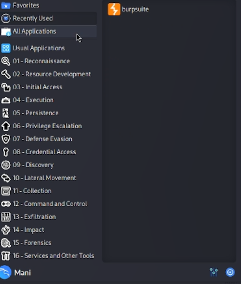
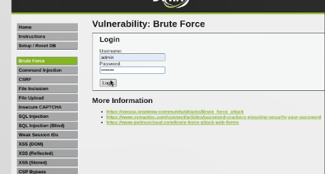
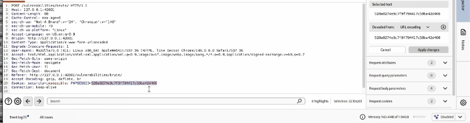
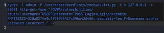

6.октябрь.2026
Изучить принцип работы инструмента Hydra и применить его для подбора учётных данных (логина и пароля) к форме авторизации уязвимого веб-приложения DVWA методом грубой силы (brute-force).
rockyou.txt.Hydra — это инструмент для подбора или взлома имени пользователя и пароля, поддерживающий большое количество сетевых протоколов и приложений (HTTP, FTP, SSH, Telnet, MySQL и другие).
Для атаки на веб-формы используются два модуля: -
http-get-form — если форма отправляет данные методом
GET; - http-post-form — если форма
отправляет данные методом POST.
Строка описания формы имеет вид: /путь:параметры_запроса:строка_при_неудаче
text где ^USER^ и ^PASS^ — подстановочные
места для логина и пароля, а третий параметр — строка, которая
присутствует на странице при неудачной аутентификации.
Если этой строки нет — Hydra делает вывод об успешном входе.
Переходим в веб-интерфейсе DVWA по адресу
http://127.0.0.1:42001/vulnerabilities/brute/. Отображается
форма входа, содержащая поля «Username» и «Password» и кнопку «Login».
Уровень безопасности DVWA установлен в Low.
Рис. 1 — Страница Brute Force в DVWA
Для анализа запроса, отправляемого формой, необходимо перехватить его с помощью Burp Suite. Запускаем Burp через меню Kali Linux → раздел «01 - Reconnaissance» → Burp Suite.

Рис. 2 — Запуск Burp Suite из меню Kali Linux
В главном окне Burp Suite переходим на вкладку Proxy → Intercept. Убеждаемся, что перехват выключен — отображается сообщение «Intercept is off» с кнопкой «Open browser».

Рис. 3 — Состояние перехвата «Intercept is off»
Нажимаем кнопку Intercept is off — она переключается в состояние Intercept is on. Теперь все HTTP-запросы браузера будут остановлены для анализа.

Рис. 4 — Активация перехвата «Intercept is on»
Открываем встроенный браузер Burp и переходим по адресу
http://127.0.0.1:42001/vulnerabilities/brute/. Вводим
произвольные данные (например, admin /
password) и нажимаем «Login».

Рис. 5 — Отправка формы входа через браузер Burp
В Burp → Proxy → Intercept отображается перехваченный запрос. Видим, что используется метод GET к адресу: /vulnerabilities/brute/?username=admin&password=password&Login=Login
text Параметры username и password
передаются прямо в строке URL, что означает необходимость использования
модуля http-get-form в Hydra.

Рис. 6 — Перехваченный GET-запрос к форме входа
Исходя из анализа запроса, формируем команду:
hydra -l admin -P /usr/share/wordlists/rockyou.txt.gz -t 4 127.0.0.1 -s 42001 http-get-form "/vulnerabilities/brute/:username=^USER^&password=^PASS^&Login=Login:H=Cookie: PHPSESSID=528a8274e9c7f9f794417c59ba42d466; security=low:F=Username and/or password incorrect."
Разбор параметров команды:Параметр Значение Назначение
-l admin Логин admin Атакуем единственного пользователя
-P ...rockyou.txt.gz Путь к словарю Список паролей для перебора
-t 4 4 потока Количество одновременных подключений
127.0.0.1 Целевой хост Локальный адрес DVWA
-s 42001 Порт Порт, на котором работает DVWA
http-get-form Модуль Так как форма использует GET
/vulnerabilities/brute/ Путь Адрес скрипта аутентификации
username=^USER^&password=^PASS^&Login=Login GET-параметры Подстановка логина и пароля
H=Cookie: PHPSESSID=...; security=low HTTP-заголовки Передача cookie сессии и уровня безопасности
F=Username and/or password incorrect. Строка ошибки Признак неудачной попытки входа

Рис. 7 — Сформированная команда Hydra
Запускаем команду в терминале. Hydra выводит информацию о запуске: максимальное число задач, общее количество попыток (14 344 399 — число строк в словаре rockyou.txt) и адрес атакуемой формы. Далее начинается последовательный перебор паролей — для каждого пароля выводится строка вида:
text
[ATTEMPT] target 127.0.0.1 - login "admin" - pass "123456" - 1 of 14344399
Рис. 8 — Процесс перебора паролей в Hydra
Итоговая команда, применённая в лабораторной работе:
bash
hydra -l admin -P /usr/share/wordlists/rockyou.txt.gz -t 4 127.0.0.1 -s 42001 http-get-form "/vulnerabilities/brute/:username=^USER^&password=^PASS^&Login=Login:H=Cookie: PHPSESSID=528a8274e9c7f9f794417c59ba42d466; security=low:F=Username and/or password incorrect." -V
Рис. 9 — Итоговая команда Hydra
Что было получено В ходе выполнения атаки Hydra успешно перехватывала GET-запросы к форме Brute Force DVWA и последовательно подставляла пароли из словаря rockyou.txt. Перебор начался с самых популярных паролей: 123456, 12345, 123456789, password, iloveyou, princess и далее по списку.
Как интерпретировать вывод Hydra Hydra выводит по одной строке на каждую попытку:
text
[ATTEMPT] target 127.0.0.1 - login "admin" - pass "123456" - 1 of 14344399 [child 0] (0/0)
Разберём эту строку:
target 127.0.0.1 — целевой сервер;
login “admin” — используемый логин (задан через -l);
pass “123456” — текущий проверяемый пароль из словаря;
1 of 14344399 — номер попытки из общего числа;
[child 0] — номер дочернего процесса (потока);
(0/0) — счётчик успешных/неуспешных попыток для данного потока.
При удачном подборе Hydra выводит строку вида:
text
[42001][http-get-form] host: 127.0.0.1 login: admin password: password
где в поле password указывается найденный пароль.
В результате выполнения лабораторной работы был успешно применён инструмент Hydra для подбора учётных данных к форме авторизации DVWA. Были отработаны практические навыки:
анализа HTTP-запросов с помощью Burp Suite для определения метода передачи данных (GET);
формирования корректной команды Hydra с модулем http-get-form;
передачи cookie-сессии и уровня безопасности через параметр H=;
указания строки-признака неудачной аутентификации через F=;
запуска атаки методом грубой силы с использованием словаря rockyou.txt.
Атака подтвердила небезопасность слабых паролей и продемонстрировала, что при отсутствии защиты от перебора (например, CAPTCHA или блокировки после N неудачных попыток) учётные данные могут быть подобраны за приемлемое время. Полученный результат может быть использован в дальнейшем для проверки стойкости парольных политик веб-приложений.
Примечание Словарь rockyou.txt содержит 14 344 399 паролей. При 4 потоках и скорости около 4 попыток в секунду полный перебор занял бы порядка 41 дня. В лабораторных условиях атака обычно останавливается после нахождения первого корректного пароля (флаг -f) либо ограничивается усечённым словарём. На практике для демонстрации достаточно, чтобы Hydra нашла пароль password — он входит в первую десятку словаря rockyou.txt.
В ходе индивидуального проекта № 3 был изучен и практически применён инструмент Hydra для проведения атаки методом грубой силы на форму авторизации DVWA. Освоены ключевые параметры команды (-l, -P, -s, -t, http-get-form, H=, F=), а также методика анализа HTTP-запросов с помощью Burp Suite для точного определения структуры формы. Продемонстрирована уязвимость веб-приложений, не защищённых от автоматизированного перебора паролей.